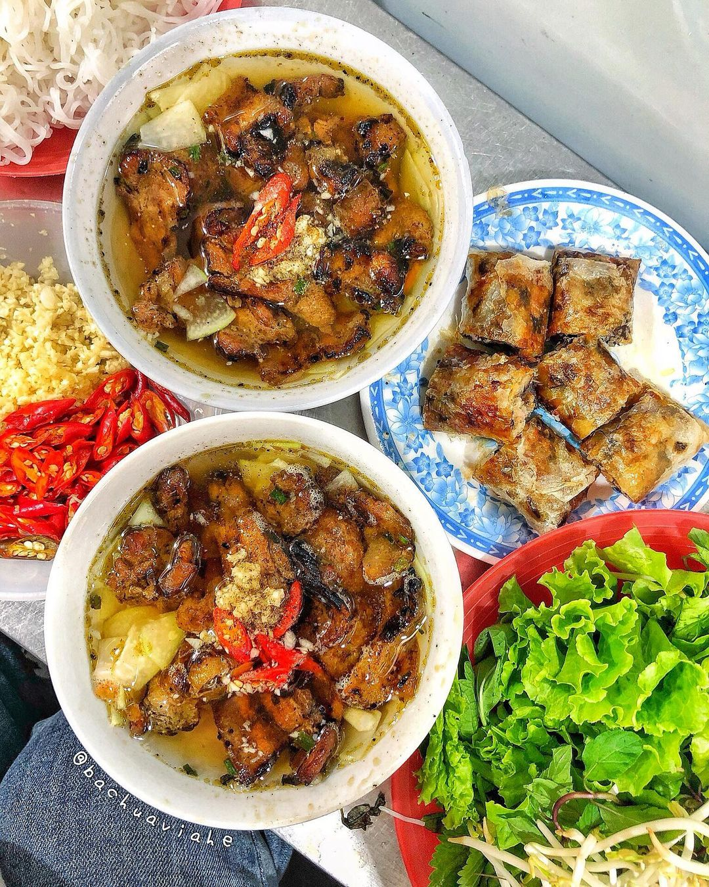
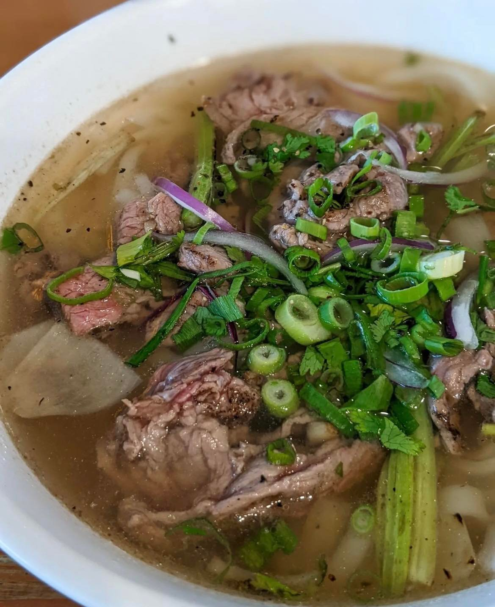
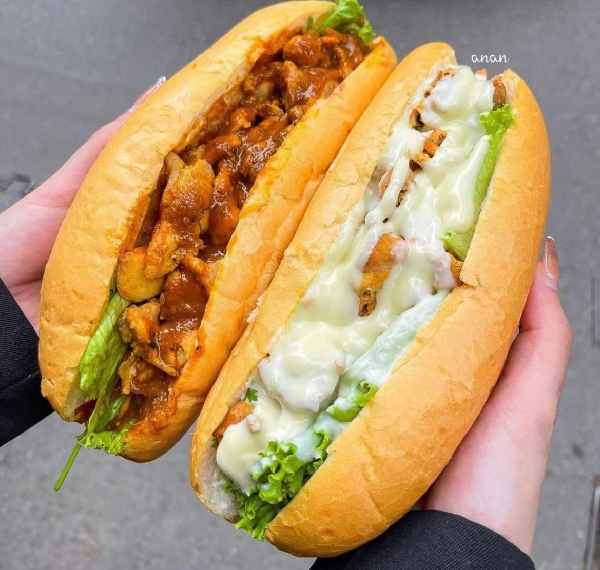
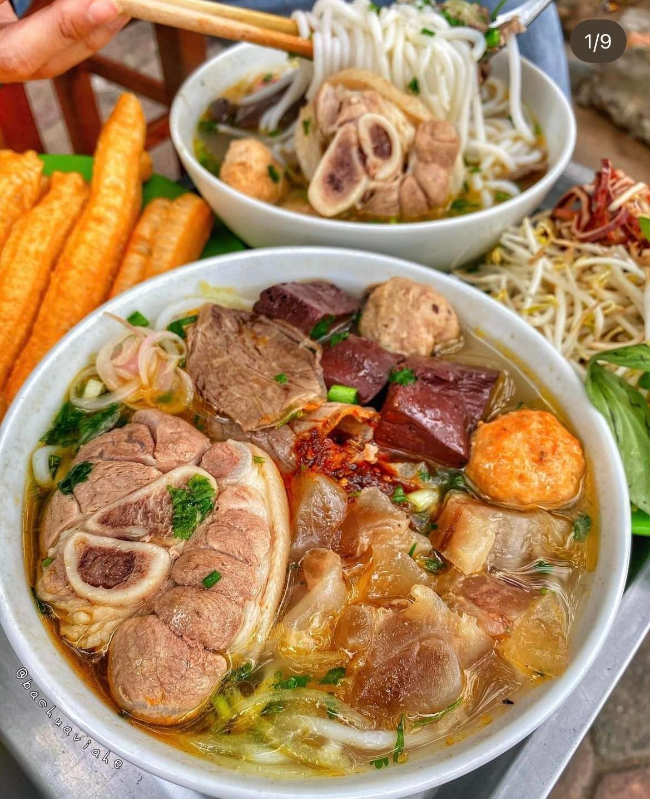
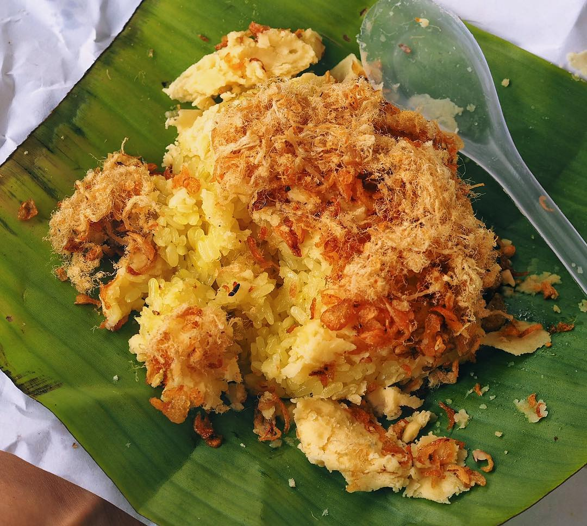

Top 5 MUST-TRY dishes when you come to Vietnam
Last updated: 7 December 2022Table of Contents
1. Bún chả
Bun Cha is a famous dish of Hanoi capital city. The main ingredients are vermicelli, grilled pork rolls, mixed fish sauce and herbs. Because of this simplicity, the dish is especially delicious and favoured by many foreign tourists.

Bun cha served with fish sauce - this is also the soul of the dish to determine the success. The dipping sauce is mixed with vinegar, sugar, fish sauce and a little minced garlic and pepper so that it is not too sour and not too sweet.
2. Phở
Pho is considered as a specialty of Vietnam. In our country, millions of bowls of pho are served every day and it becomes a favorite dish for a lot of citizens and foreigners. In September 2007, this dish was officially included in the Oxford dictionary as the dear name "Pho".

A bowl of beef pho is a combination of many traditional spices such as cinnamon, anise, cardamom, grilled onions, etc. In a good bowl of pho, the noodle soup must be sweet from the bones, the beef must be cooked, and the noodle must be soft.
3. Bánh mì
Banh mi - a dear name that has been deeply imprinted in the minds of many Vietnamese people, and it has become the pride of Vietnamese cuisine. Through many ups and downs in history, Vietnamese bread has now crossed the national border and left its mark in the world cuisine.

The ingredients of the this bread is varied according to each region. Traditional ingredients usually include pork, pate, sausage, pickles, herbs, chili with a hot, crispy loaf of bread. Bread is compact, easy to carry with an affordable price, which is suitable for all classes. With only 15 thousand dong (not even 1 euro), you can easily find and buy a banh mi on the street.
4. Bún bò Huế
Hue beef noodle is one of the specialties of Hue - a city in Vietnam. The dish has the main ingredients of vermicelli, beef, pork rolls, with a typical red broth and lemongrass and shrimp flavor. Sometimes the bowl of vermicelli is also added to rare beef, crab cakes, and other ingredients depending on the preferences of the cook.

In the broth of vermicelli, Hue people often add a little fish sauce, contributing to the very own flavor of Hue beef noodle pot. After the beef bones are cooked, people often add a little pork or crab cakes that are finely chopped. Beef can be thinly sliced, dipped in boiling broth before being added to a bowl of vermicelli (called rare beef). People also often add a little chili powder and spices to the bowl of vermicelli and eat it with raw vegetables including bean sprouts, herbs, lettuce, baby vegetables, chopped bananas. Bun bo Hue is not only a popular dish when coming to Hue, but now it is available in many parts of the world.
5. Xôi
It will be a big regret if you come to Vietnam without trying “xoi”. Made from sticky rice, xoi has as many variants as you can imagine. “Xoi” is a very common food in Vietnam, and one can find it anywhere from the roadside vendors to luxuriously traditional restaurants. However, “xoi” is not “xoi” anymore when eating in an air-conditioned room with professional services. After all, “xoi” is still street food, which means that people should buy and enjoy it on the street.

To make xoi more delicious, the cook must choose a suitable type of sticky rice depending on the type of xoi. Xoi can be eaten alone or with meat, pate, eggs, etc. Whether eaten in the morning or in the evening, it is very appropriate.